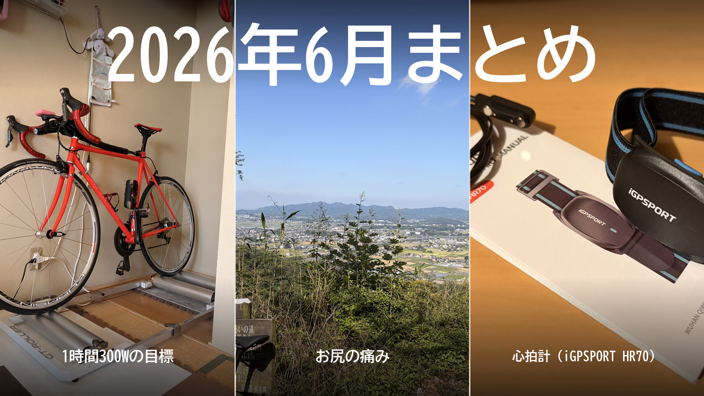

2026年6月まとめ。1時間300Wの目標、お尻の痛み、心拍計
ブログを始めた6月の振り返り。6月は、富士ヒルゴールドに向けて何が足りないのかを、数字で確かめ始めた月だった。大きな出来事は3つ。目標ができたこと、お尻で練習が止まったこと、心拍計で練習を数字で見られるようになったこと。強くなった月というより、課題がやたらと見えた月である。

6月の走行距離と時間
外とローラーの内訳
距離の3分の2が外で、獲得標高はすべて外の分。心拍の記録が残っているのは、心拍計を付け始めた16日以降の11回だけである。
トピック1：「ローラーで1時間300W」という目標ができた
13日、ローラーで20分を285Wで走った。15分までは行けると思ったが、そこから地獄だった。それでも、この日に「ローラーで1時間300W」を当面の目標に置いた。富士ヒルは約1時間の登りなので、1時間出し続けられるパワーがそのままタイムに直結するからである。
21日には、その300Wで富士ヒルを走ったらどうなるかをシミュレーションした。総重量82kgで1時間7分9秒。ゴールドの目安は65分切りなので、約2分届かない。目標にした数字が、そもそも足りていなかった。そこで300Wをゴールではなく通過点と考え直し、まずはSST20分×2を安定させるところから、30分、45分、60分と段階を踏むことにした。このブログの軸は、ここでできた。
トピック2：お尻の痛みで練習が止まった
16日に太平でTSS120を積んだ翌日、唐沢でお尻が限界になった。登りは3本こなしたが、最後はパワーより痛みが勝った。帰って確認すると、左側を中心に皮がむけて赤くなっていた。連日のライドで擦れが積み重なっていたらしい。その足で、人生で初めてワセリンを買った。
翌日は予定していたローラーをやめて、自転車の代わりにジョギング。富士ヒルゴールドを目指しているのに、この時点の最大の敵は平均パワーでも体重でもなく、お尻だった。19日にローラーを再開したときは、ワセリンのおかげか問題なし。パワーを伸ばす前に、乗り続けられる体の準備が要ると分かった。
トピック3：心拍計で、練習を数字で見られるようになった
6月いちばんの収穫はこれ。心拍計は10年以上使っていなかった。昔は使っていたが、胸に巻くタイプがどうにも苦しくて、いつの間にかやめていた。今回は腕に巻くタイプのiGPSPORT HR70を選んだら、走っていても気にならず、16日の太平から心拍が取れるようになった。それまでGarminにやたらと「リカバリー」扱いされていた評価も、少し現実に近づいた。
心拍があると、練習の中身を数字で説明できる。19日のローラーSSTは、2本目でパワーが6Wしか上がっていないのに、平均心拍は141bpmから154bpmへ跳ね、15分で切り上げた。21日のVO2でも、4本目はパワーが317Wに落ちたのに心拍は最大169bpm。脚より先に心肺が限界に来ていた。心拍がなければ「根性が足りない」で終わっていた話である。パワーは出した結果、心拍は体の反応。この2つがそろって、ようやく練習を数字で振り返れるようになった。
そのほかの練習
外では唐沢や太平、琴平を中心に登った。22日は唐沢5分337W、琴平12分305Wで、前日のローラーの疲れがあっても外なら踏めた。23日は太平の帰りのストレートで16分280W。
ローラーではVO2（3〜4分の高強度）とSST（FTPの少し下で長く踏む練習）を交互に入れ、25日にSST20分×2を250W台で崩さずに完遂した。300Wへの段階の最初の一段が、ここで形になった。
7月への持ち越し
月末の30日、Garminから「無酸素運動が足りない」と言われた。なので7月は、唐沢で5分走を繰り返すゴルビーの各本の最後に、330W以上を入れる形から始める。SSTは20分×2の次の段階として、FTP付近の15分×2や30分走へ伸ばしていく。お尻のケアも続ける。